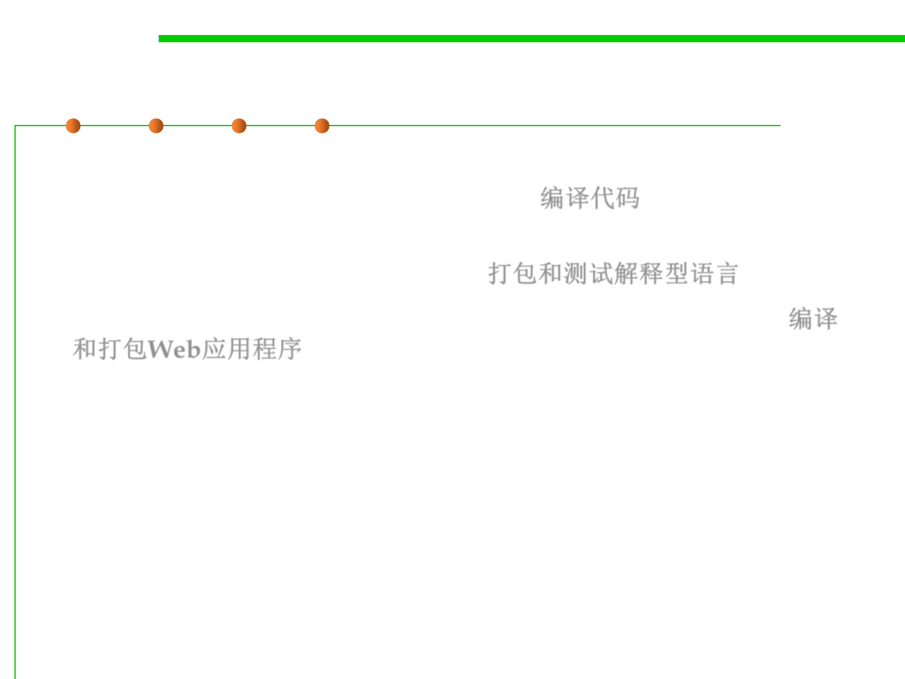

2.2 Process, Systems, and Tools of Software Construction
Typical BUILD scenarios
▪ 1. The compilation of software written in traditional compiled
languages, such as C, C++, Java and C#. 编译代码
▪ 2. The packaging and testing of software written in interpreted
languages such as Perl and Python. 打包和测试解释型语言
▪ 3. The compilation and packaging of web-based applications. 编译
和打包Web应用程序
– These include static HTML pages, source code written in Java or C#,
hybrid files written using JSP (JavaServer Pages), ASP (Active Server
Pages), or PHP (Hypertext Preprocessor) syntax, along with numerous
types of configuration file.